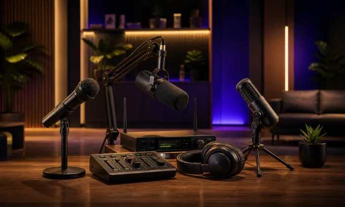
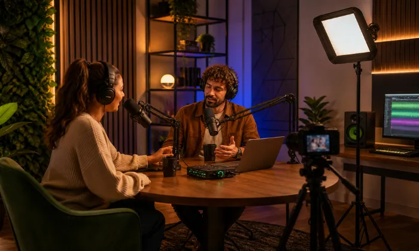
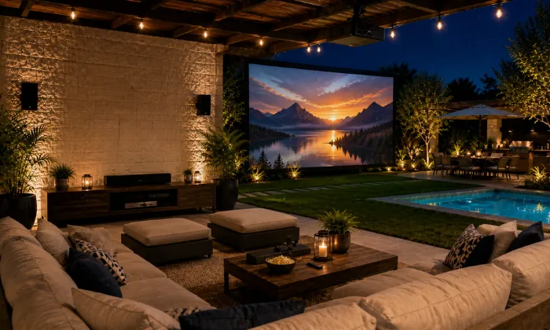
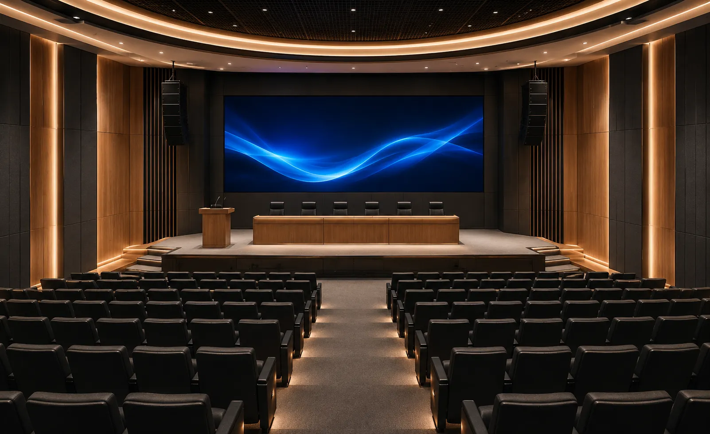

Audio y video para Cine Independiente: proyección, sonido y exhibición.
Diseñamos e integramos soluciones audiovisuales para salas de exhibición,
cineclubes, foros, festivales y espacios culturales.
Antes de seleccionar equipos
revisamos dimensiones, distancia de visualización, relación de tiro, luz ambiental, tamaño de
pantalla, formato de contenido, audiencia, cobertura sonora, SPL esperado, subgraves, fuentes,
conectividad, cableado y operación.
Una sala independiente necesita más que una pantalla grande
En cine independiente, imagen y sonido deben dimensionarse en conjunto. Distancia de visualización, tamaño de pantalla, relación de tiro, luz ambiental, resolución, cobertura, nivel sonoro, subgraves, fuentes y conectividad afectan el resultado final.
Nuestro enfoque se adapta a salas de exhibición, cineclubes, centros culturales, festivales, funciones privadas y espacios híbridos que presentan películas, documentales, cortometrajes, conciertos grabados o contenido audiovisual especial.
Imagen dimensionada
Proyector, óptica y pantalla se seleccionan según distancia de tiro, tamaño de imagen, luz ambiental, resolución y formato.
Cobertura y dinámica
Altavoces, subwoofers, amplificación y procesamiento se definen según audiencia, cobertura, SPL esperado y formato de reproducción.
Flujo de señal
Fuentes, reproducción, distribución de video, audio y control se organizan según el tipo de función y operación prevista.
Capacidad de crecimiento
Cuando el proyecto lo permite, se deja capacidad en señal, audio, entradas, salidas, red o control para futuras ampliaciones.
Un sistema mal dimensionado puede limitar imagen, sonido y operación
Cuando proyector, pantalla, audio y reproducción se seleccionan por separado pueden aparecer problemas de brillo, tamaño de imagen, relación de tiro, cobertura sonora, nivel, compatibilidad o conectividad.
Antes de cotizar revisamos espacio, audiencia, distancias, luz ambiental, pantalla, tiro de proyección, resolución, fuentes, formato de audio, cobertura, SPL esperado, impedancia, potencia, cableado, conectividad y forma de operación.
Imagen insuficiente
Brillo, resolución, óptica, relación de tiro o tamaño de imagen incorrectos pueden reducir legibilidad, contraste y aprovechamiento de la pantalla.
Audio débil
Una cobertura incompleta, falta de margen de amplificación o subgraves mal dimensionados puede afectar diálogos, música y contenido dinámico.
Conexión complicada
Fuentes, reproductores, matrices o extensores deben seleccionarse según resolución, distancias, protección de contenido y arquitectura de señal.
Falta de operación
Una operación sin procedimientos claros puede complicar selección de fuentes, reproducción, niveles de audio y cambios entre funciones.
Integramos proyección, audio, reproducción, señal y control para cada tipo de exhibición.
La solución se define según dimensiones, audiencia, distancia de tiro, tamaño de imagen, luz ambiental, resolución, formato de contenido, cobertura sonora, SPL esperado, conectividad, infraestructura y presupuesto.
Proyectores profesionales
Proyectores y ópticas seleccionados según tamaño de imagen, distancia de tiro, luz ambiental, resolución, relación de aspecto y formato de contenido.
Pantallas de gran formato
Pantallas fijas, motorizadas o acústicamente transparentes cuando el diseño lo requiere, seleccionadas según tamaño, ganancia, formato y ubicación del sistema de audio.
Audio profesional
Altavoces, amplificación y procesamiento para configuraciones estéreo, LCR o multicanal según formato, cobertura, nivel requerido e impedancia del sistema.
Subwoofers activos
Subwoofers dimensionados según volumen del recinto, audiencia, extensión de baja frecuencia, nivel objetivo y capacidad del resto del sistema.
Conectividad y matrices
Matrices, reproductores, extensores y cableado seleccionados según fuentes, resolución, distancias, protección de contenido y arquitectura de señal.
Microfonía para eventos
Micrófonos de mano, solapa u otras opciones para cineforos, presentaciones y conversatorios, seleccionados según movilidad, número de canales y entorno de radiofrecuencia.
De la pantalla al sonido: una experiencia integral
Podemos integrar proyector, pantalla, audio, subwoofers, reproducción, distribución de señal, microfonía y control para salas de exhibición, cineforos, festivales, funciones privadas y eventos especiales.
 Salas de exhibición
Salas de exhibición
 Centros culturales
Centros culturales

Cineforos y debates
Festivales y muestras
Cine al aire libre
Auditorios principalesUn proceso claro para dimensionar tu sala de exhibición
Un proceso estructurado para definir visualización, audio, reproducción, señal, cableado, equipos e instalación antes de cerrar el proyecto.
Entendemos el uso
Revisamos si será cine, documentales, conciertos grabados, cineforos, festivales, eventos privados o contenido mixto.
Revisamos el espacio
Consideramos dimensiones, audiencia, distancias de visualización y tiro, luz ambiental, pantalla, ruido, reverberación, energía y cableado.
Diseñamos la solución
Definimos proyector, óptica, pantalla, altavoces, subwoofers, amplificación, procesamiento, reproducción, conectividad, microfonía y control.
Cotización formal
Te entregamos alcance, equipos, servicios, tiempos, supuestos, exclusiones y pendientes técnicos por confirmar.
Integración
Realizamos suministro, montaje, cableado, conexión, configuración, pruebas y puesta en marcha conforme al alcance aprobado.
Capacitación
Realizamos ajustes finales y capacitación básica para el personal responsable de reproducción, audio, fuentes y operación del sistema.
No seleccionamos proyectores y bocinas por separado: dimensionamos el sistema completo de exhibición
Una sala de exhibición requiere considerar distancias, relación de tiro, tamaño de imagen, relación de aspecto, luz ambiental, formato de audio, cobertura, nivel sonoro, subgraves, reproducción, señal y cableado.
Nuestro enfoque integra visualización, audio, reproducción y control como un solo sistema, con criterios de compatibilidad, capacidad operativa, mantenimiento y crecimiento futuro.
Tecnología profesional para proyección, sonido y control
- Levantamiento y definición del alcance
- Dimensionamiento de imagen y audio
- Equipos originales y tecnología profesional
- Integración de reproducción y señal
- Instalación y cableado según proyecto
- Pruebas, ajustes y capacitación básica
- Soporte y ampliación según alcance
Marcas profesionales para soluciones de alto rendimiento
Seleccionamos tecnología profesional según imagen, audio, cobertura, potencia, conectividad, compatibilidad, operación y presupuesto del proyecto.
Dudas comunes antes de equipar un Cine independiente
Estas son algunas de las variables que revisamos antes de definir el alcance técnico y la cotización.
Diseñemos tu proyecto de Cine Independiente
Compártenos medidas, audiencia, distancias, tipo de contenido, audio, proyección, equipos existentes e infraestructura para revisar el alcance técnico.
Equipemos tu
Sala de Cine
Podemos orientarte sobre proyección, óptica, pantallas, audio, subwoofers, reproducción, matrices, conectividad, microfonía y actualización de una sala existente.
Solicita asesoría para tu proyecto de exhibición
Completa el formulario y se abrirá WhatsApp con la información estructurada. Incluye medidas, audiencia, distancia aproximada de proyección, pantalla, contenido, audio y equipos existentes cuando los conozcas.